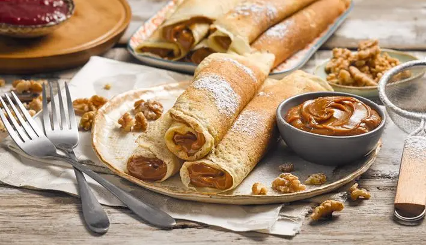
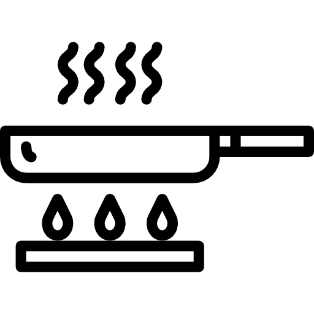

Prepara esta receta de panqueques con dulce de leche y enamorate con cada bocado ¡Sorprende con algo rico y simple!
Utensilios
Bol
Colador
 Sartén
Cucharón
Cucharas medidoras
Tamiz
Ingredientes
2 Tazas de leche semidescremada
2 Huevos
1 Cucharada de aceite
Medio pote de dulce de leche
1 1/2 Taza de harina cernida
3 Cucharadas de azúcar
Paso a paso
En un bol junta la leche con los huevos y el aceite. Bate para mezclar bien.
Agrega poco a poco la harina batiendo para evitar que se formen grumos. Debes obtener una mezcla un poco espesa.
Deja reposar la mezcla tapada por 15 minutos.
Calienta un sartén plano antiadherente y agrega una cucharadita de aceite vegetal. Esparce el aceite con ayuda de un trozo de papel absorbente.
Agrega al sartén 3/4 de cucharón de la mezcla y vierte inmediatamente. Mueve el sartén desde el mango para cubrir su base. Evita que haya mucha mezcla para que no queden gruesos.
Cocina por 3 a 4 minutos o hasta que veas que la parte superior se seque y la de abajo se dore levemente. Dale la vuelta con cuidado y cocina por unos 3 minutos más. Repite lo mismo con el resto de la mezcla.
Una vez listos, rellena cada panqueque con una cucharada de dulce de leche y enróllalos. Espolvorea azúcar flor por encima y sirve tus panqueques de inmediato, fríos o calientes, como más te guste.
¡Disfruta de estos deliciosos panqueques caseros y enamórate de su dulzura!
 Bol
Bol Cucharas medidoras
Cucharas medidoras 2 Huevos
2 Huevos 3 Cucharadas de azúcar
3 Cucharadas de azúcar